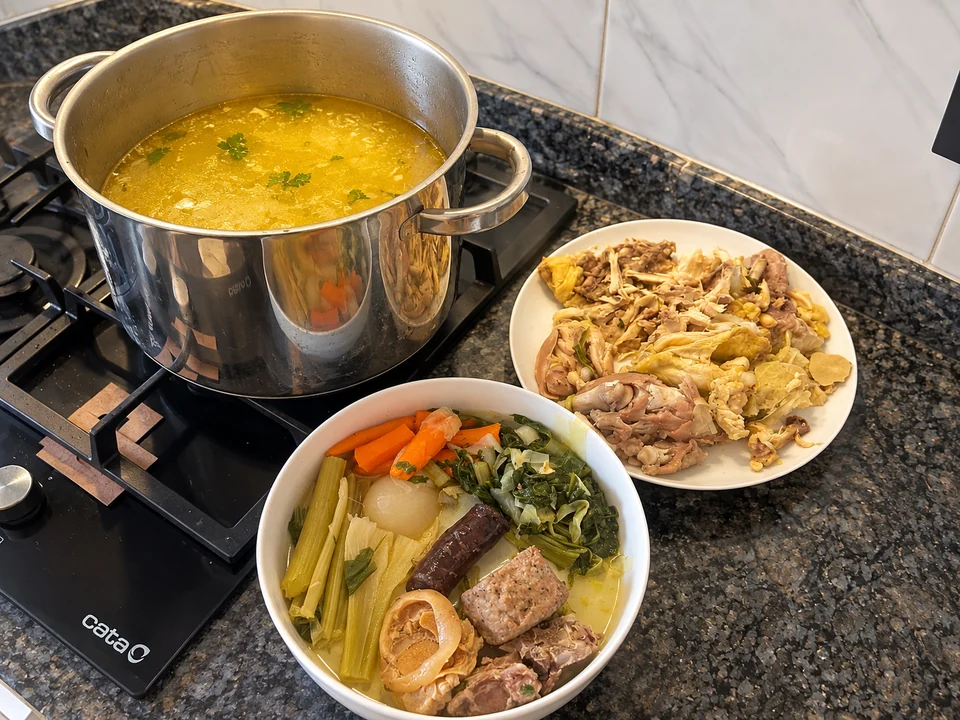

Escudella catalana casera
Una olla grande de escudella con carnes, pollo y verduras, cocida a fuego suave y colada al final para servir un caldo limpio, dorado y reconfortante.
- Tiempo
- 2 h 45–50 min aprox.
- Cantidad
- Olla grande

PASO A PASO
Cómo preparar escudella catalana casera
- Pon en una olla grande las carnes, los huesos, la carcasa de pollo y las alas.
- Cubre con agua fría, unos 6,5–7 litros, según el tamaño de la olla.
- Lleva a ebullición y, durante los primeros 15–20 minutos, desespuma bien retirando las impurezas que suben a la superficie.
- Incorpora los puerros, las zanahorias, la cebolla y el apio.
- Cocina a fuego suave, a chup-chup, durante unos 90 minutos. Mejor sin remover para que el caldo quede más limpio.
- Añade la acelga y deja seguir cocinando.
- Cuando el caldo lleve alrededor de 2 horas de cocción, añade la pilota y cocina unos 30 minutos más.
- Agrega la butifarra negra en los últimos 15–20 minutos para que no se rompa.
- Saca con cuidado las carnes y las verduras de la olla.
- Cuela el caldo para dejarlo limpio.
- Prueba y sala solo al final, una vez colado.
UN POCO DE OFICIO
Para que te salga bien
Consejos
- La clave está en una cocción lenta y suave.
- Desespumar bien al principio ayuda a conseguir un caldo más limpio.
Recomendaciones
Evita remover la olla durante la cocción larga y ajusta la sal únicamente después de colar el caldo.
Cómo servir y presentar
Sirve el caldo bien caliente. Lleva las verduras y las carnes hervidas aparte para que cada persona pueda acompañarlo a su gusto.
MÁS SOBRE ESTA RECETA
↑ Volver a la recetaEscudella catalana casera: un caldo cocinado sin prisas
En esta versión de escudella el trabajo está en la olla: carnes, huesos, pollo y verduras cuecen a fuego suave hasta dejar un caldo sabroso que después se sirve bien colado, con la carne y las verduras aparte.
Desespumar al principio
Los primeros 15–20 minutos son importantes para retirar las impurezas que suben a la superficie. Hacerlo con paciencia ayuda a que el caldo quede más limpio al final.
La pilota y la butifarra entran más tarde
La pilota se incorpora cuando el caldo ya lleva alrededor de dos horas. La butifarra negra entra en los últimos 15–20 minutos para evitar que se rompa durante una cocción tan larga.
Colar y salar al final
Después de retirar carnes y verduras, el caldo se cuela. La sal se ajusta entonces, cuando ya conoces la concentración final del caldo. Puedes servirlo bien caliente y acompañar aparte con la carne y las verduras cocidas.
Sigue cocinando
Más sopas y cremas
Caldo gallego
Caldo gallego de alubias, patata, grelos y cerdo, humilde y reconfortante.

Cocido madrileño
Cocido madrileño de garbanzos, carnes, verduras y caldo servido en vuelcos.

Escudella i carn d’olla
Escudella catalana con caldo, galets, garbanzos, verduras, carnes y pilota.